먼저 생각해 보세요.
Thomas sagt, dass die Suppe zu scharf ist. 국이 맵다고 생각하는 사람은 누구인가요?
sagt, dass …는 남이 한 말을 전하는 문장이에요.
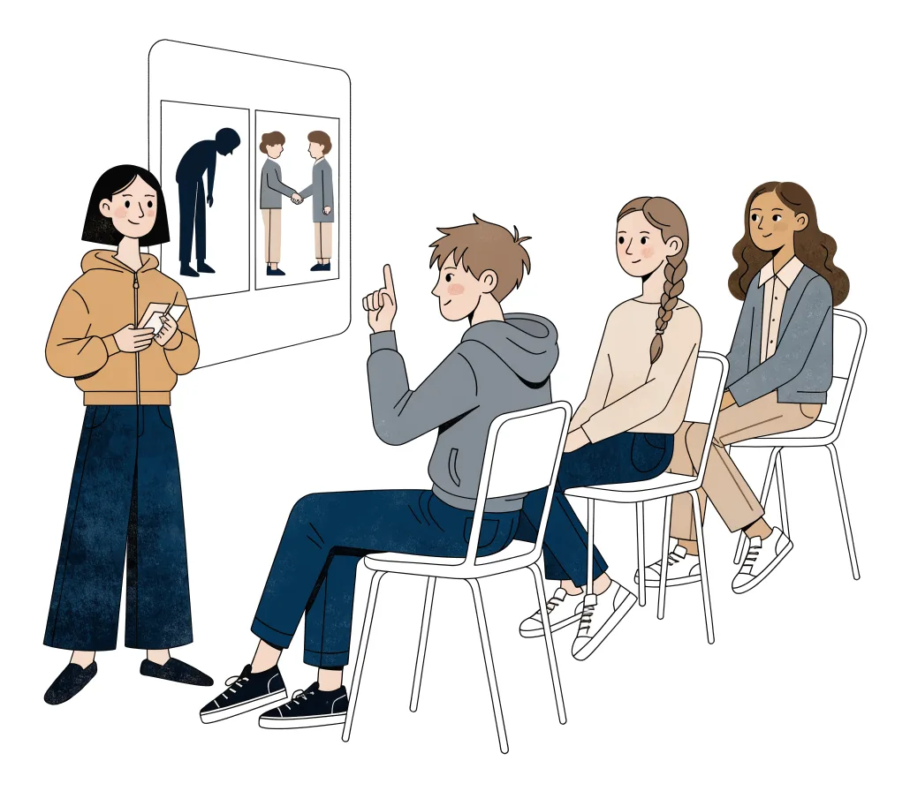
7월 중순이에요. Yuna가 반 친구들 앞에서 한국과 독일을 견주는 발표를 해요. 팟캐스트에서는 Elif가 두 문화 속에서 자란 이야기를 들려줘요.
눌러서 들어 보세요.
먼저 생각해 보세요.
Thomas sagt, dass die Suppe zu scharf ist. 국이 맵다고 생각하는 사람은 누구인가요?
sagt, dass …는 남이 한 말을 전하는 문장이에요.
Lektion 6의 낱말 다섯 개를 다시 떠올려 보세요.
문법 indirekte Rede (Er sagt, dass … / Sie meint, …), Wortbildung (-ung, -heit, -keit, un-, Komposita)
이 과를 마치면 문화의 차이와 공통점을 견주고, 남이 한 말을 전하고, 오해가 생긴 까닭을 설명할 수 있어요.
7월 중순, Yuna가 반 친구들 앞에서 「Korea und Deutschland」를 발표하고 질문을 받아요.
들으면서 찾아보세요. Yuna는 첫날 호스트 어머니께 어떻게 인사했나요?
팟캐스트 「Mitreden」을 녹음하는 날이에요. 오늘은 Lukas가 진행하고 Elif가 손님이에요.
들으면서 찾아보세요. Lukas는 Elif네 집에 처음 갔을 때 무엇을 몰랐나요?
두 대화를 듣고 답하세요.
Wie hat Yuna ihre Gastmutter am ersten Tag begrüßt?
Yunas Mutter sagt, dass es in Korea unhöflich wäre, so offen mit Lehrern zu diskutieren.
Was hat Yuna missverstanden?
Was meinen Yunas Freunde in Korea?
Welche Sprache spricht Elif zu Hause?
Elif meint, dass man sich für eine Kultur entscheiden muss.
Das meinen manche Leute. Elif gehört zu beiden Kulturen.
Lukas는 Elif네 집에 처음 갔을 때 무엇을 몰랐나요?
낱말 34개예요. 낱말이나 예문 앞의 단추를 누르면 소리가 나요. 명사는 der, die, das를 색으로 구분했어요.
die Kultur, die Kulturen 문화
Elif lebt mit zwei Kulturen.Elif는 두 문화와 함께 살아요.
die Tradition, die Traditionen 전통
Das Fest ist eine alte Tradition.그 잔치는 오랜 전통이에요.
die Gemeinsamkeit, die Gemeinsamkeiten 공통점
Wir haben viele Gemeinsamkeiten.우리는 공통점이 많아요.
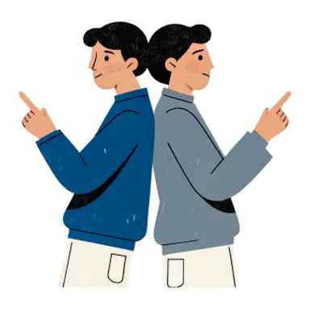
das Missverständnis, die Missverständnisse 오해
Das war nur ein Missverständnis.그건 그냥 오해였어요.
missverstehen, hat missverstanden 잘못 알아듣다, 오해하다
Du hast mich missverstanden.너는 내 말을 잘못 알아들었어.
bedeuten, hat bedeutet 뜻하다
Was bedeutet dieses Wort?이 낱말은 무슨 뜻이에요?
das Verhalten 행동, 태도
Sein Verhalten war sehr höflich.그의 행동은 아주 공손했어요.
sich verhalten, hat sich verhalten (du verhältst dich, er verhält sich) 행동하다
Wie verhält man sich als Gast?손님일 때는 어떻게 행동해요?
typisch 전형적인, ~다운
Das ist typisch für Lukas.그건 Lukas다워요.
üblich 흔히 하는, 보통인
Bei uns ist es üblich, die Schuhe auszuziehen.우리 집에서는 신발을 벗는 것이 보통이에요.
ähnlich 비슷한
Die zwei Sprachen sind ähnlich.그 두 말은 비슷해요.
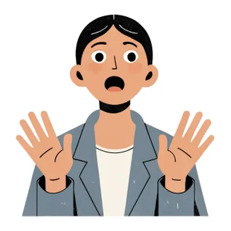
überrascht 놀란
Ich war sehr überrascht.나는 무척 놀랐어요.
höflich 공손한, 예의 바른
Yuna ist immer höflich.Yuna는 늘 공손해요.
unhöflich 무례한
Es ist unhöflich, zu spät zu kommen.늦게 오는 것은 무례해요.
die Höflichkeit 예의, 공손함
Höflichkeit ist in jeder Kultur wichtig.예의는 어느 문화에서나 중요해요.
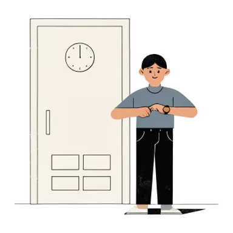
die Pünktlichkeit 시간을 잘 지키는 것
Pünktlichkeit ist meinem Opa sehr wichtig.우리 할아버지는 시간 지키는 것을 아주 중요하게 여기세요.
die Ehrlichkeit 솔직함, 정직
Ich mag deine Ehrlichkeit.나는 네 솔직함이 좋아.
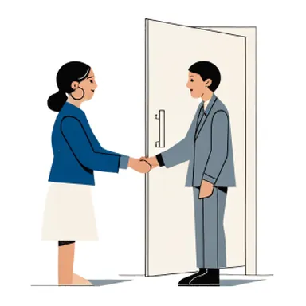
begrüßen, hat begrüßt 인사하며 맞이하다
Die Lehrerin begrüßt die Klasse.선생님이 반 학생들에게 인사해요.
die Begrüßung, die Begrüßungen 인사, 맞이하는 말
Die Begrüßung war sehr herzlich.인사가 아주 따뜻했어요.
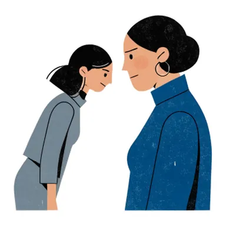
sich verbeugen, hat sich verbeugt 허리 숙여 인사하다
In Korea verbeugt man sich vor älteren Menschen.한국에서는 어른께 허리 숙여 인사해요.
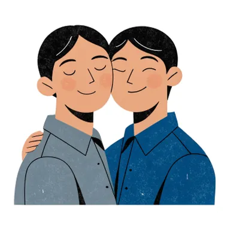
umarmen, hat umarmt 껴안다
Zum Abschied umarmt Emma ihre Freundin.헤어질 때 Emma는 친구를 껴안아요.
duzen, hat geduzt du라고 부르다
Schüler duzen ihre Freunde.학생들은 친구를 du라고 불러요.
siezen, hat gesiezt Sie라고 부르다
Wir siezen unsere Lehrerin.우리는 선생님을 Sie라고 불러요.
die Muttersprache, die Muttersprachen 모국어
Koreanisch ist Yunas Muttersprache.한국어는 Yuna의 모국어예요.
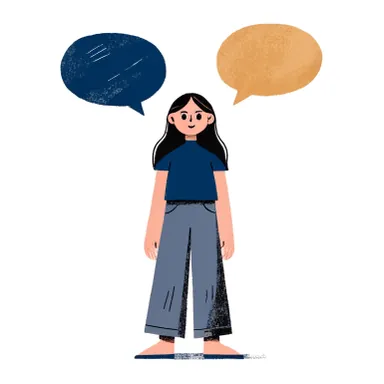
zweisprachig 두 말을 쓰는
Elif ist zweisprachig.Elif는 두 말을 써요.
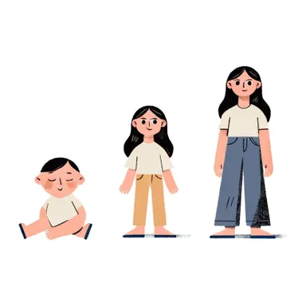
aufwachsen, ist aufgewachsen (du wächst auf, er wächst auf) 자라다
Elif ist in Köln aufgewachsen.Elif는 쾰른에서 자랐어요.
der Akzent, die Akzente 말씨, 외국어 억양
Yuna spricht fast ohne Akzent.Yuna는 거의 억양 없이 말해요.
die Identität, die Identitäten 정체성
Sprache ist ein Teil der Identität.말은 정체성의 한 부분이에요.
dazugehören, hat dazugehört 한 무리에 들다, 속하다
Jeder möchte dazugehören.누구나 무리에 들고 싶어 해요.
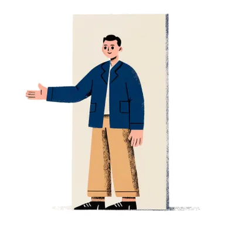
der Gastgeber, die Gastgeber 손님을 맞는 사람
Der Gastgeber begrüßt alle Gäste.주인이 손님을 모두 맞이해요.
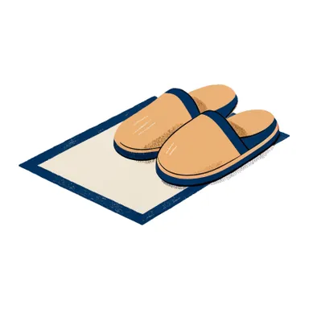
die Hausschuhe (Pl.) 실내화
An der Tür stehen Hausschuhe für die Gäste.문 앞에 손님이 신을 실내화가 놓여 있어요.
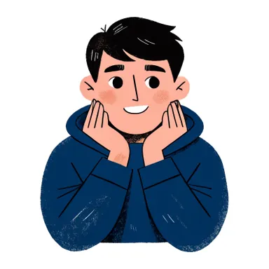
lächeln, hat gelächelt 미소 짓다
Sie lächelt freundlich.그 사람은 상냥하게 미소 지어요.
schweigen, hat geschwiegen 말없이 있다
Alle schweigen und hören zu.모두 말없이 듣고 있어요.
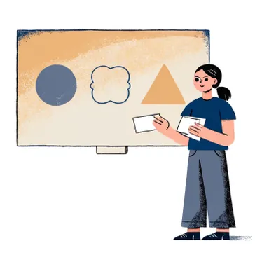
der Vortrag, die Vorträge 발표, 강연
Yuna hält einen Vortrag über Korea.Yuna는 한국에 대해 발표해요.
이 과의 낱말로 여덟 문제를 풀어요.
예문을 보고 답해 보세요.
Oma sagt zu Elif: „Du sprichst zu schnell.“ Elif가 이 말을 전하면 어떻게 되나요?
규칙
남이 한 말을 전할 때는 sagen, meinen, erzählen 뒤에 dass 문장을 써요. 동사는 dass 문장 맨 끝에 가요. 전하는 사람이 달라지니까 ich, du, mein, dein 같은 말도 바꿔요.
| 그대로 한 말 | 전하는 말 |
|---|---|
| Thomas: „Die Suppe ist zu scharf.“ | Thomas sagt, dass die Suppe zu scharf ist. |
| Oma: „Du sprichst mit Akzent.“ | Oma sagt, dass ich mit Akzent spreche. |
| Lukas: „Ich habe Hunger.“ | Lukas sagt, dass er Hunger hat. |
주의 질문을 전할 때는 dass가 아니라 ob이나 의문사를 써요. Er fragt, ob man noch etwas essen möchte.
예문을 보고 답해 보세요.
frei로 만든 명사는 무엇인가요?
규칙
동사 뿌리에 -ung을 붙이면 명사가 돼요. 형용사에는 -heit나 -keit를 붙여요. -ig, -lich, -sam, -bar로 끝나는 형용사에는 -keit를 붙여요. 이렇게 만든 명사는 모두 여성이라서 die를 써요.
| 바탕말 | 명사 |
|---|---|
| begrüßen, erfahren | die Begrüßung, die Erfahrung |
| frei, sicher | die Freiheit, die Sicherheit |
| höflich, pünktlich | die Höflichkeit, die Pünktlichkeit |
주의 복수는 언제나 -en이에요. die Erfahrungen, die Gemeinsamkeiten.
예문을 보고 답해 보세요.
die Muttersprache에서 관사 die는 어느 낱말을 따른 것인가요?
규칙
형용사 앞에 un-을 붙이면 반대말이 돼요. 명사 두 개를 붙이면 새 낱말이 돼요. 이때 관사는 맨 뒤 낱말을 따라가요. 뜻도 맨 뒤 낱말이 바탕이에요.
| 만드는 길 | 보기 |
|---|---|
| un- + 형용사 | unhöflich, unpünktlich, unüblich |
| 명사 + 명사 | das Haus + die Schuhe = die Hausschuhe |
| 명사 + 명사 | der Gast + die Familie = die Gastfamilie |
주의 사이에 -s-나 -n-이 들어가기도 해요. der Geburtstag, das Wochenende.
저녁 식탁에서 Emma가 엄마에게 Yuna의 발표 이야기를 해요. 듣고 답하세요.
Beim Abendessen
Sabine Wie war Yunas Vortrag heute?
Emma Sehr gut. Sie hat erzählt, dass sie sich am ersten Tag vor dir verbeugt hat.
Sabine Das stimmt. Und ich habe sie umarmt. Sie war ganz überrascht.
Emma Sie hat auch gesagt, dass Papas Ehrlichkeit am Anfang schwer für sie war.
Sabine Oh. Und wie ist es jetzt?
Emma Jetzt meint sie, dass sie selbst direkter geworden ist. Gestern hat sie gesagt, dass mein Kuchen zu süß ist.
Was hat Yuna am ersten Tag gemacht?
Sabine hat Yuna am ersten Tag umarmt.
Was war am Anfang schwer für Yuna?
Yuna는 어제 Emma에게 무슨 말을 했나요?
듣고 알맞은 것을 고르세요.
내일은 어떻게 되나요?
Frau Schneider hat gesagt, dass wir morgen später anfangen.
할머니 생각에 Elif는 어떻게 말하나요?
Meine Oma meint, dass ich zu schnell spreche.
Yuna의 어머니는 무엇이라고 써 보냈나요?
Meine Mutter hat geschrieben, dass sie mich sehr vermisst.
Emma네에서는 손님에게 어떻게 인사하나요?
Bei uns ist es üblich, den Gästen die Hand zu geben.
Yuna가 발표 때 나눠 준 글이에요. 읽고 답하세요.
Was mich in Deutschland überrascht hat
Am Sonntag sind fast alle Geschäfte geschlossen. Am Anfang fand ich das unpraktisch, aber jetzt mag ich die Ruhe.
Viele Deutsche sagen direkt ihre Meinung. Das ist nicht unhöflich gemeint. Sie finden Ehrlichkeit wichtig.
Abends gibt es in vielen Familien nur Brot mit Käse und Wurst. Das heißt Abendbrot. In Korea essen wir abends warm.
Freunde duzt man, aber Lehrer und fremde Erwachsene siezt man.
Eine Gemeinsamkeit habe ich auch gefunden: In meiner Gastfamilie zieht man die Schuhe aus, genauso wie in Korea.
Was fand Yuna am Anfang unpraktisch?
Yuna schreibt, dass die Deutschen unhöflich sind.
Sie schreibt, dass das nicht unhöflich gemeint ist.
Was ist ein Abendbrot?
Wen siezt man?
Yuna가 찾은 공통점은 무엇인가요?
Yuna가 발표에서 보여 준 표예요. 보고 답하세요.
Korea und Deutschland
| Thema | Korea | Deutschland |
|---|---|---|
| Schuhe | ausziehen | verschieden |
| Abends | warm essen | oft Brot |
| Sonntag | Läden offen | Läden zu |
Was macht man in Korea zu Hause mit den Schuhen?
In Deutschland isst man abends oft Brot.
Wo sind die Geschäfte am Sonntag geschlossen?
Läden은 Geschäfte와, zu는 geschlossen과 같은 뜻이에요.
남이 한 말을 전해요. 알맞은 말을 고르세요.
Emma sagt, sie müde ist.
Emma는 피곤하다고 해요.
Lukas: „Ich habe Hunger.“ Lukas sagt, dass Hunger hat.
Lukas는 배고프다고 해요.
Oma: „Du sprichst zu schnell.“ Oma meint, dass ich zu schnell .
할머니는 내가 너무 빨리 말한다고 생각하세요.
Yuna erzählt, dass sie sich am ersten Tag verbeugt .
Yuna는 첫날 허리 숙여 인사했다고 이야기해요.
Elif: „Meine Oma kocht sehr gut.“ Elif sagt, dass Oma sehr gut kocht.
Elif는 자기 할머니가 요리를 아주 잘하신다고 해요.
Der Gastgeber fragt, wir noch etwas essen möchten.
주인이 우리에게 더 먹겠느냐고 물어요.
질문을 전할 때는 ob을 써요.
낱말 만들기예요. 알맞은 말을 고르세요.
Yuna ist immer pünktlich. Ihre gefällt Frau Schneider.
Yuna는 늘 시간을 지켜요. Schneider 선생님은 그 점을 좋아하세요.
Die Menschen wollten frei sein. Sie demonstrierten für .
사람들은 자유롭고 싶었어요. 자유를 바라며 시위했어요.
Die Gastmutter begrüßt Yuna. Die ist sehr herzlich.
호스트 어머니가 Yuna를 맞이해요. 인사가 아주 따뜻해요.
Zu spät kommen ist nicht höflich. Es ist .
늦게 오는 것은 공손하지 않아요. 무례해요.
Muttersprache von Yuna ist Koreanisch.
Yuna의 모국어는 한국어예요.
관사는 맨 뒤 낱말 die Sprache를 따라가요.
Schuhe für das Haus heißen .
집에서 신는 신발은 실내화라고 해요.
알맞은 낱말을 고르세요.
Das war nur ein . Ich habe es nicht so gemeint.
그건 그냥 오해였어. 그런 뜻이 아니었어.
In Korea man sich vor älteren Menschen.
한국에서는 어른께 허리 숙여 인사해요.
Elif ist : Sie spricht Türkisch und Deutsch.
Elif는 두 말을 써요. 터키어와 독일어를 해요.
Was dieses Wort? Ich verstehe es nicht.
이 낱말은 무슨 뜻이야? 모르겠어.
Unsere Lehrerin wir. Wir sagen Frau Schneider zu ihr.
우리는 선생님을 Sie라고 불러요. Frau Schneider라고 해요.
Türkisch und Deutsch: Elif gehört zu zwei .
터키어와 독일어. Elif는 두 문화에 속해요.
낱말을 순서대로 눌러 문장을 만드세요.
Emma는 피곤하다고 해.
아빠는 솔직함이 중요하다고 생각하셔.
그건 그냥 오해였어.
Elif는 두 말을 쓰면서 자랐어.
낱말과 뜻을 짝지으세요.
듣고 그대로 써 보세요.
Das war ein Missverständnis. 그건 오해였어.
Ich gehöre zu beiden Kulturen. 나는 두 문화에 다 속해.
Sie sagt, dass sie müde ist. 그 애는 피곤하다고 해.
Sie sagt, dass sie müde ist. 그 애는 피곤하다고 해.
Er meint, dass das unhöflich ist. 그는 그게 무례하다고 생각해.
Sie hat erzählt, dass sie überrascht war. 그 애는 놀랐다고 이야기했어.
Ich habe gehört, dass es dort anders ist. 거기는 다르다고 들었어.
Bei uns ist es üblich, die Schuhe auszuziehen. 우리는 신발을 벗는 것이 보통이야.
In Korea ist das anders. 한국에서는 달라.
Das ist eine Gemeinsamkeit. 그건 공통점이야.
Das ist in beiden Ländern ähnlich. 그건 두 나라가 비슷해.
Das war ein Missverständnis. 그건 오해였어.
So habe ich das nicht gemeint. 그런 뜻으로 한 말이 아니야.
Was bedeutet das? 그건 무슨 뜻이야?
Jetzt verstehe ich es. 이제 알겠어.
Das hat mich überrascht. 그건 놀라웠어.
Ich war überrascht, dass alle so direkt sind. 모두 그렇게 솔직해서 놀랐어.
Am Anfang war das fremd für mich. 처음에는 그게 낯설었어.
Jetzt habe ich mich daran gewöhnt. 이제는 익숙해졌어.
대화 B에서 역할을 하나 고르세요. 상대의 말은 음성으로 나오고, 내 차례에는 직접 말해요.
우리나라와 독일을 견주며 적으세요. 완성된 문장을 소리 내어 읽어 보세요.
Bei uns ist es üblich, die Schuhe an der Tür auszuziehen.
In Deutschland hat mich überrascht, dass die Geschäfte am Sonntag geschlossen sind.
Meine Freundin sagt, dass die Deutschen sehr pünktlich sind.
Eine Gemeinsamkeit ist, dass man gern zusammen isst.
Ein Missverständnis
문화가 달라서 생긴 오해나 놀란 일을 글로 써요. 여덟 문장쯤 써요.
Als ich neu in Deutschland war, gab es ein lustiges Missverständnis. Meine Gastmutter hat mich gefragt, ob ich noch etwas essen möchte. In Korea ist es höflich, zuerst Nein zu sagen. Deshalb habe ich Nein gesagt, obwohl ich noch Hunger hatte. Der Teller war sofort weg. Später hat Emma mir erklärt, dass Nein in Deutschland wirklich Nein bedeutet. Jetzt sage ich direkt, was ich möchte. Aus dem Missverständnis habe ich etwas über Höflichkeit gelernt.
다 쓴 뒤에 확인해 보세요.
Ich kann Kulturen vergleichen und Gemeinsamkeiten und Unterschiede nennen.문화를 견주고 공통점과 차이를 말할 수 있어요.
Ich kann berichten, was jemand gesagt hat.누가 무슨 말을 했는지 전할 수 있어요.
Ich kann ein Missverständnis erklären.오해가 생긴 까닭을 설명할 수 있어요.